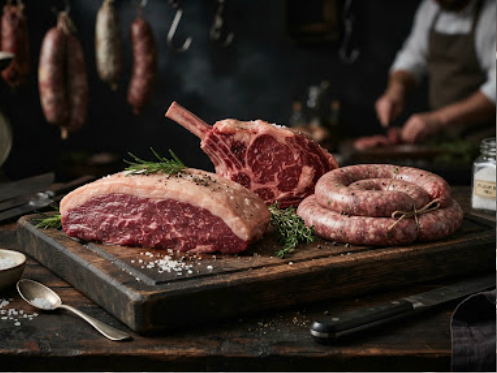

Pronto para escolher os cortes para o seu próximo churrasco?
Peça cortes nobres crus fracionados sob medida pelo nosso açougueiro ou use a calculadora para definir as porções exatas de carne fresca que você precisa.
A Self Same HUB é uma verdadeira boutique e casa de carnes nobres. Desossamos carcaças inteiras diariamente, porcionamos cortes crus frescos na espessura exata da sua preferência e pesamos cada grama na balança antes do envio refrigerado rigoroso de 0°C a 2°C.

Unimos o conhecimento profundo da anatomia bovina e o corte artesanal a um padrão rigoroso de higiene e pesagem. Sem aproximações ou bandejas padronizadas: cada corte é preparado com a dedicação de um mestre de ofício.
Recebemos peças inteiras selecionadas. Cada corte é trabalhado respeitando as fibras naturais e a toalete milimétrica da gordura, garantindo a retenção ideal dos sucos e textura impecável no preparo.
Eliminamos o peso aproximado e as margens estimadas. Nossa carne fresca vai diretamente à balança de alta sensibilidade para registrar cada grama exato, sem cobranças extras ou surpresas no recebimento.
Do corte primário à desossa diária artesanal, cada peça crua obedece ao padrão milimétrico de corte, aferição real na balança e maturação controlada.
Desossa diária artesanal músculo por músculo na faca de alto carbono.
Zero peso aproximado: precisão ao grama certificado pelo IPEM.
Câmaras salinas de bloco do Himalaia sob rigoroso frio de 0°C a 2°C.
Avaliação máxima por mestres churrasqueiros e clientes exigentes.
"Açougue não é apenas empilhar peças no balcão: é conhecer a anatomia bovina, saber a direção exata da fibra e desossar com precisão cirúrgica. Na Self Same, cada bife cortado na nossa bancada é tratado como uma joia da cutelaria artesanal, pronto para brilhar no braseiro de quem ama churrasco de verdade."
Chefe Açougueiro da Cutelaria e Maturação Self Same • 60 anos de ofício
Peça cortes nobres crus fracionados sob medida pelo nosso açougueiro ou use a calculadora para definir as porções exatas de carne fresca que você precisa.